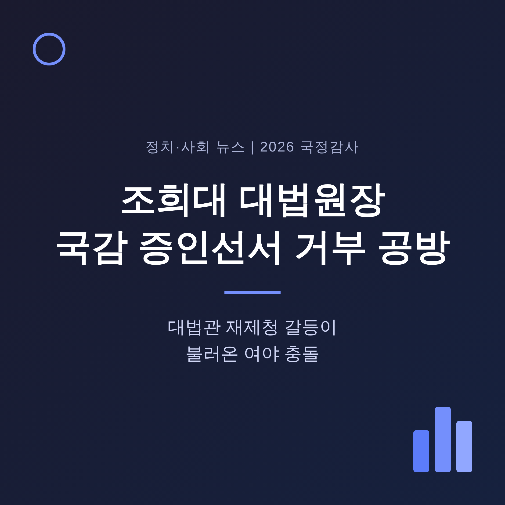
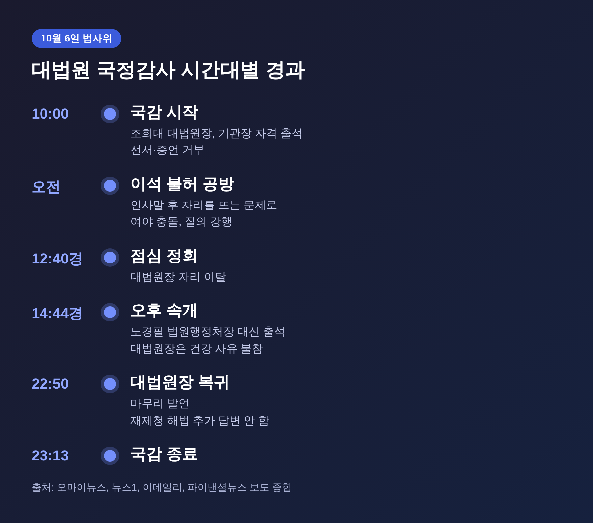
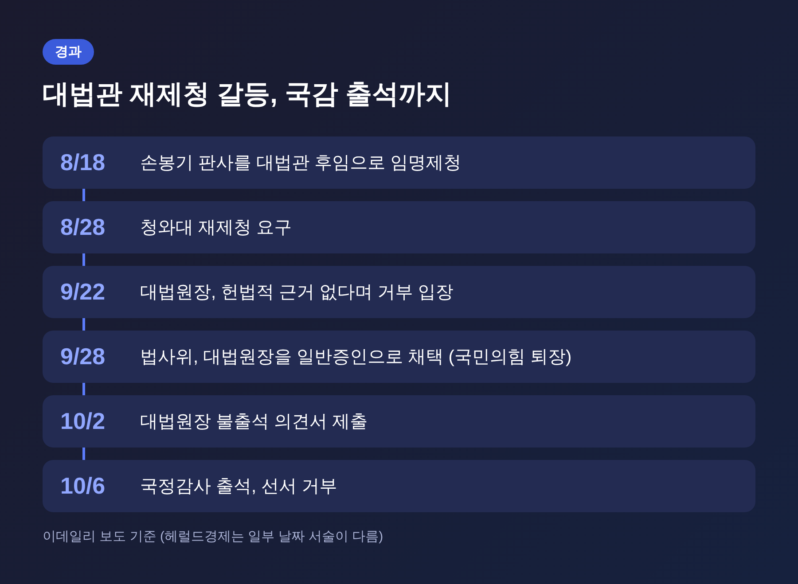
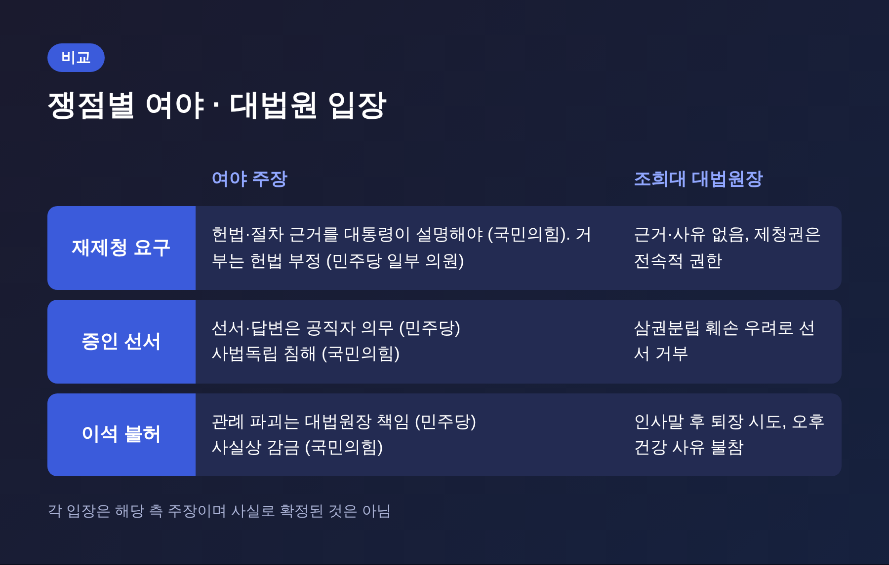
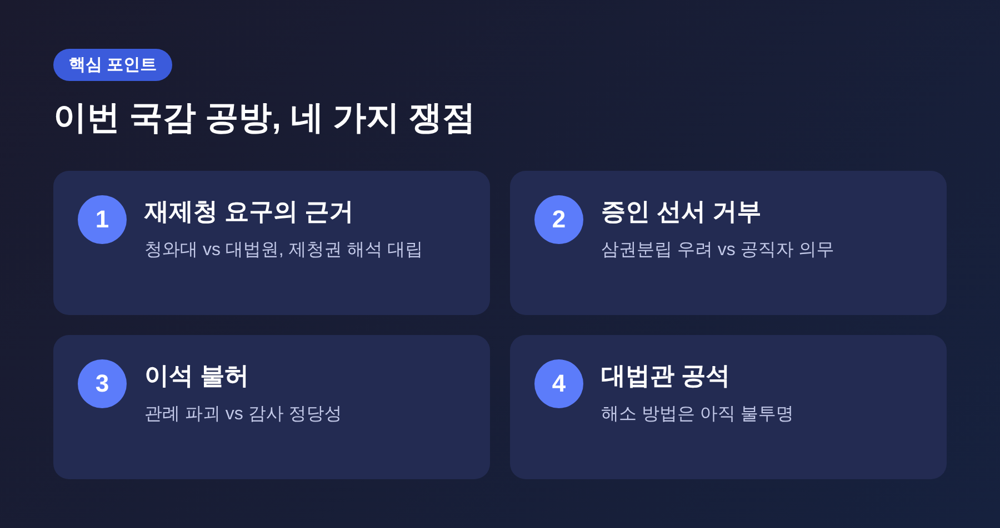
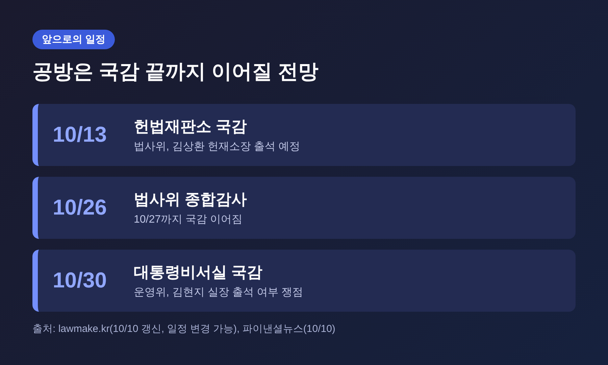

조희대 대법원장 국감 증인선서 거부 공방, 대법관 재제청 갈등이 불러온 충돌

오늘은 2026년 국정감사 첫날, 국회 법제사법위원회에서 벌어진 조희대 대법원장 출석 공방을 정리해 보려 합니다.
10월 6일 조 대법원장은 증인이 아닌 기관장 자격으로 출석해 선서를 거부했고, 인사 후 자리를 뜨는 문제를 두고 여야가 정면으로 부딪쳤습니다.
핵심에는 대법관 임명제청을 둘러싼 청와대와 대법원의 이견이 있습니다. 양측 주장을 나란히 놓고 살펴보겠습니다.
■ 무슨 일이 있었나: 10월 6일 하루의 경과
2026년 국정감사는 10월 6일 오전 10시, 법사위의 대법원 감사로 문을 열었습니다.
조희대 대법원장은 여당 주도로 채택된 일반증인이었지만, 불출석 의견서를 낸 뒤 기관장 자격으로 자리했습니다. 모두발언은 했습니다. 증인 선서와 증언은 거부했습니다.
사유는 삼권분립과 사법독립 훼손 우려였습니다. 서울경제 보도에는 헌법 제104조 2항을 근거로 든 것으로 나옵니다.
관례대로라면 인사말을 마치고 자리를 뜰 차례였습니다. 그러나 서영교 위원장이 이석을 허락하지 않았고, 여당 의원들의 질의가 이어졌습니다.
국민의힘은 이를 두고 고성으로 항의했고, 김태규 의원의 발언권이 정지되는 등 회의는 파행을 거듭했습니다.
점심 정회 무렵인 낮 12시 40분쯤 대법원장은 자리를 떠났습니다. 오후 감사는 오후 2시 44분쯤 노경필 법원행정처장이 대신 출석한 채 속개됐습니다.
대법원장은 감기 증상 등 건강을 이유로 불참했고, 마무리 발언은 끝날 무렵 하겠다는 뜻을 밝혔습니다.
밤 10시 50분 회의장에 돌아온 그는 마무리 발언을 했고, 감사는 밤 11시 13분에 끝났습니다.

■ 왜 중요한가: 사법부 수장과 입법부가 맞선 이례적 장면
대법원장이 국감장에서 이렇게 장시간 공방의 중심이 된 것은 흔한 일이 아닙니다.
이번 사안은 단순한 출석 여부 다툼이 아닙니다. 대법관 자리가 비어 있는 상태에서 누가, 어떤 절차로 후임을 정하느냐는 문제와 맞물려 있습니다.
국회, 대통령, 대법원이 각자 헌법상 권한을 다르게 읽고 있다는 점이 쟁점의 뿌리입니다.
대법원장은 제청 권한이 전속적이라고 말합니다. 청와대는 후보추천위원회의 추천을 존중해 달라고 말합니다. 여당은 국민 앞에 설명할 책임을 말합니다.
같은 헌법 조항을 두고 세 갈래의 해석이 나란히 서 있는 셈입니다.
■ 배경: 재제청 요구에서 증인 채택까지
사안의 출발점은 대법관 후임 제청입니다. 이데일리 보도에 따르면 경과는 이렇습니다.
- 8월 18일: 조 대법원장이 손봉기 대구지법 부장판사를 노태악 전 대법관 후임으로 임명제청
- 8월 28일: 청와대가 재제청 요구
- 9월 22일: 대법원장이 헌법적 근거가 없다며 거부 입장 표명
- 9월 28일: 법사위가 여당 주도로 대법원장을 일반증인으로 채택, 국민의힘 퇴장
- 10월 2일: 대법원장이 불출석 의견서 제출
- 10월 4일: 서영교 위원장이 동행명령장 발부 가능성과 국회증언감정법상 조치를 언급
다만 헤럴드경제는 9월 22일에 제청과 반려가 있었던 것으로 적어, 매체별로 날짜 서술에 차이가 있습니다. 이 글은 이데일리 기준을 따랐습니다.
동행명령장은 실제로 발부됐다는 보도를 확인하지 못했습니다. 결과적으로 대법원장은 기관장 자격으로 출석했습니다.

■ 쟁점 ①: 재제청 요구에 근거가 있는가
조 대법원장은 10월 6일 오전 청와대의 재제청 공문에 "구체적 사유와 헌법적 근거가 기재되지 않았다"고 설명했습니다(파이낸셜뉴스).
대통령과의 사전 협의는 법적 의무가 아니라 사법부의 자발적 협력이었고, 제청권에 대한 간섭은 위헌이라는 입장도 재확인했습니다(서울경제).
민주당은 다르게 봅니다. 김의겸 의원은 대통령실과 사전 합의 없이 제청이 올라온 점을 문제 삼았습니다.
박균택 의원은 재제청 거부가 헌법을 부정하는 행위이며 개인적으로 탄핵 사유라고 본다고 말했습니다.
국민의힘은 반대편에 섭니다. 박형수 간사는 재제청 요구의 헌법적 근거를 대통령이 직접 설명해야 한다며, 이재명 대통령을 증인으로 불러야 한다고 주장했습니다.
한쪽의 주장이 곧 사실로 확인된 것은 아닙니다. 헌법 해석이 걸린 문제인 만큼, 최종 판단은 쉽게 나오지 않을 것으로 보입니다.
■ 쟁점 ②: 이석 불허는 관례 위반인가, 정당한 감사인가
국민의힘 박형수 간사는 역대 대법원장이 인사말 후 자리를 떴다가 마지막에 돌아오는 것이 관례였다고 말했습니다. 붙잡아 둔 것은 사실상 감금이라는 주장입니다.
최수진 원내수석대변인은 다음 날 논평에서 "명백한 체포이자 감금"이라고 표현했습니다(월요신문).
민주당 김의겸 간사의 답은 이렇습니다. 관례가 흔들린 것은 대법원장 본인의 행동 때문이며, 선서와 답변은 공직자의 의무라는 것입니다.
서영교 위원장은 오후 불참을 허가 없는 이석으로 규정하며 "엄청난 특혜"라고 비판했습니다(뉴스1).
또 선서 거부와 오후 불출석을 국회 모욕으로 보고 국회증언감정법에 따른 고발 조치를 통보했다고 서울경제는 전합니다. 실제 고발장이 접수됐는지는 확인되지 않았습니다.

■ 쟁점 ③: 말과 태도를 둘러싼 논란
회의장 안 발언도 논란을 키웠습니다.
진보당 손솔 의원이 "제2의 윤석열이 되려는 것이냐"고 묻자, 조 대법원장은 "모욕적이고 슬프다"고 답했습니다(파이낸셜뉴스).
계엄에 대해서는 법원이 어느 기관보다 먼저 위헌이라고 판단했다고 설명했습니다.
업무추진비도 도마에 올랐습니다. 오마이뉴스에 따르면 오전에는 사과하면서도 구성원들이 "못 먹어보던 음식"을 먹어보고 싶어 한다는 답변이 논란이 됐습니다.
마무리 발언에서는 한결 낮은 자세였습니다. 대법관 격려금과 업무추진비 집행에 미흡한 점이 있었다고 인정하고, 기준과 절차를 점검하겠다고 했습니다(이데일리).
국민의힘 김태규 의원의 발언도 문제가 됐습니다. 여권 의원을 향한 폭언으로 발언권이 정지됐고, 서울경제는 고인이 된 전직 대통령을 연상시키는 발언이라는 논란이 일었다고 전합니다.
회의 품위를 둘러싼 비판은 여야 모두에게 해당하는 대목입니다.
■ 정리하는 쟁점

■ 전망: 대법관 공석은 어떻게 풀릴까
대법원장은 마무리 발언에서 장기화된 대법관 공석에 "거듭 송구하다"고 사과하고, 대법원이 온전히 구성되도록 노력하겠다고 밝혔습니다(이데일리).
그러나 재제청 해법을 묻는 질문에는 "오전에 말씀드린 것으로 갈음하겠다"며 더 답하지 않았습니다. 해법의 방향은 아직 드러나지 않았습니다.
앞으로의 변수를 몇 가지 꼽을 수 있습니다.
- 법사위 국감은 10월 27일까지 이어집니다. 10월 13일에는 헌법재판소, 10월 26일에는 종합감사가 예정돼 있습니다(lawmake.kr).
- 국회증언감정법에 따른 고발이 실제로 진행되는지는 아직 확인되지 않았습니다.
- 증인 채택 충돌은 국감이 끝날 때까지 이어질 전망입니다. 운영위의 대통령비서실 감사는 10월 30일로 잡혀 있습니다(파이낸셜뉴스).
- 청와대는 후보추천위 추천을 존중해 신속히 재제청해 달라는 입장을 유지하고 있습니다(서울경제).

정리하면 이렇습니다.
이번 공방은 출석과 선서라는 형식 문제 같지만, 실은 대법관 한 자리를 채우는 권한을 누가 쥐느냐는 물음입니다.
"권한의 경계는 누구의 해석이 아니라 절차로 다뤄져야 합니다."
여야의 언성이 높아질수록 정작 비어 있는 대법관 자리를 언제 채우느냐는 물음은 뒤로 밀리기 쉽습니다. 남은 국감에서 그 물음이 다시 앞자리로 돌아올 수 있을지 지켜볼 일입니다.
※ 이 글은 뉴스핌, 파이낸셜뉴스, 뉴스1, 서울경제, 오마이뉴스, 이데일리, 월요신문, 헤럴드경제 보도를 바탕으로 정리했습니다. 각 발언은 해당 매체 보도를 인용한 것이며, 정당·인물의 주장은 사실로 확정된 것이 아닙니다.